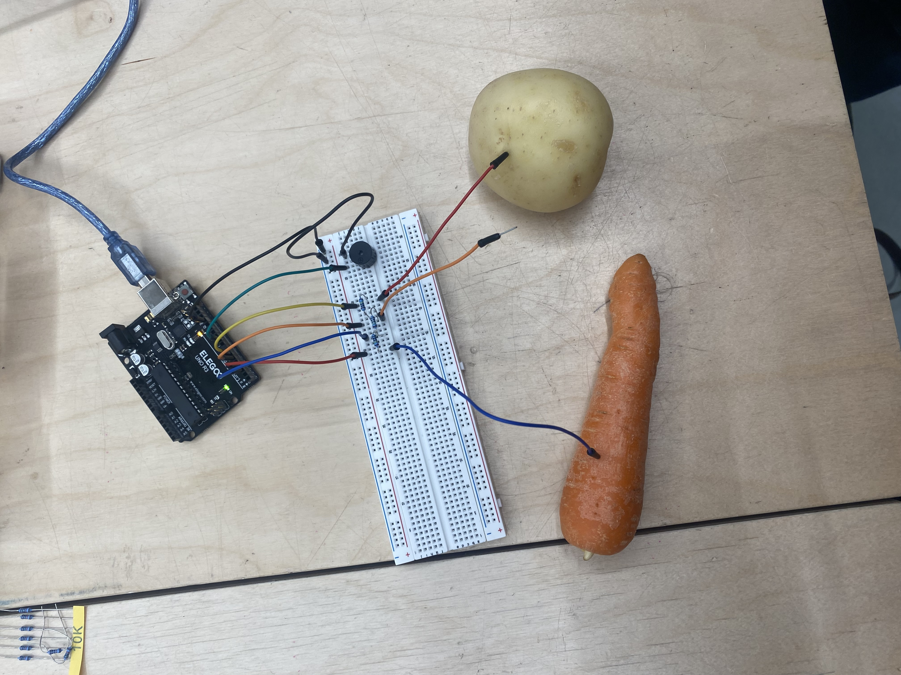

This build to the left was a series of LED lights that would theoretically turn on when their assigned button was pressed on the remote. We couldn't get this build to work by the end of class, I'm still unsure why. We could only get one LED to light up with the remote.
To the right is the arduino diagram from TinkerCad that we followed along with to create a musical instrument using a potato, a carrot and a leaf. It's pretty amazing how electricity can travel through these objects, and the change to the current can be monitored. We assigned each item to be a different note, and then played an out of tune rendition of 'Hot Cross Buns'. My housemates were pretty impressed when I told them what I did in class this week.
Inspired by the sketches by ... in Le Macchine di Munari (see above), I drew some of my own sketches for Chindogu inventions. I found it mostly a fun task, but I did feel a little silly doing it, which is probably indicative of having accumulated a certain kind of pride that is a barrier to creativity. That being said I do think the 'Scroll Stopper' idea is actually kind of neat and would probably help in the area of creativity barriers. It is a lot easier using a pen and paper to quickly ideate things.
https://www.behance.net/gallery...
Data Visualisation artwork by Diego Zaks. The machine documents murders in Venezuela as a "live feed". The use of the receipt and tweet, and so the suggestion of commercialism and product is in the background of the work, and creates an uneasy and even sinister feeling. Its quite revealing of the emotion and human baggage tied to data, which can often be thought of as unsentimental and "scientific", that can be exploited through the medium/visualisation the data is comunicated through.
https://www.instructables.com/Doter-Huge-Arduino...
Huge Ardino Based Dot Matrix Printer by Nikodem Bartnik. I thought this was a fun project that connected physical computing to printing, an intersection that I find I'm drawn to. The dots work really well as a machine drawing technique, and give the Dotter a personality.